Vertical Cabinet
The First Machine I wanted to tackle was one of the unidentified cabs. I took the one with the failed monitor and cleaned it out, removing all the boards and cabling power supply (I think it was failed too).
As I already had the custom built cab and some parts, my plan was to set this up as a Vertical cab including a stick & trackball in order to play simple vertical games and also things like centipede, missle command and ideally arkanoid as well.
As it turns out Arkanoid isn't that easy to play with a trackball, or I haven't managed to get it tuned properly.
Initial Setup
As with the other cabs, I started with the control panel. I cut 4 blanks to use, and with this one I set it up with a stick, 3 buttons & 2 start/coin buttons + the trackball. I used the router to recess the ball's mount but it was a tight squeeze (I can't add bolts on the bottom without some extra work) but the layout works well in the cabinet.
With the panel, cut and painted, it actually looked good. In terms of paint I just used a black spray gloss, but this was only to get things up and running.
You can also see in the screen shots the vertically mounted monitor. I took some extra sheet wood I had (It's chipboard) to make a template and tryout holding the vertical monitor. Initially it's a dry fit with the monitor sitting there, but again is good enough to get things running.
| 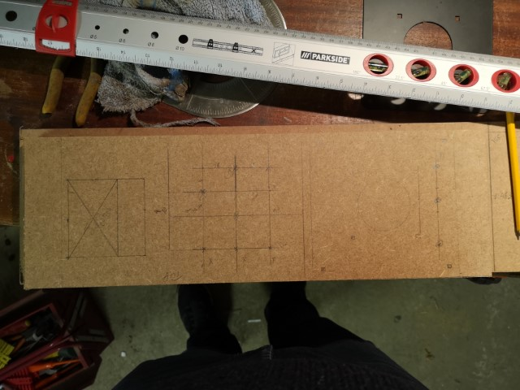 | 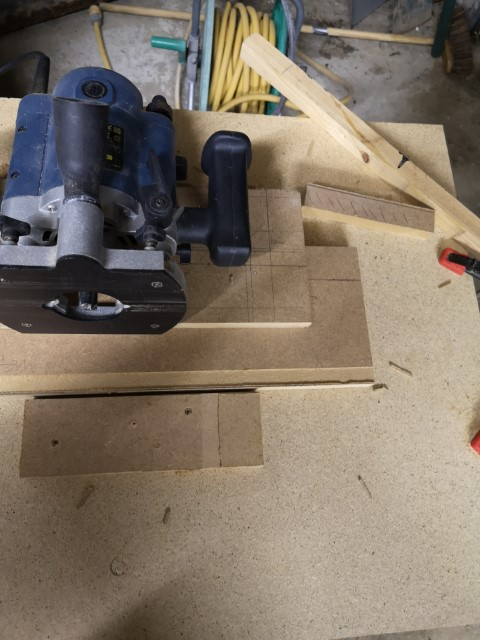 | 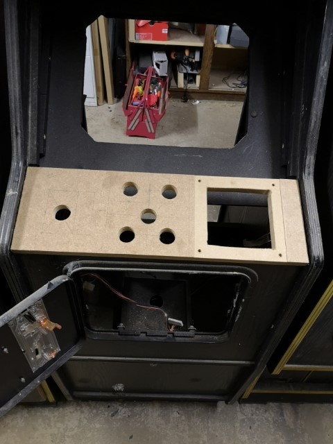 |
| 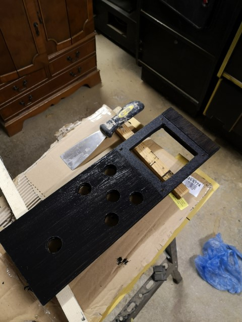 | 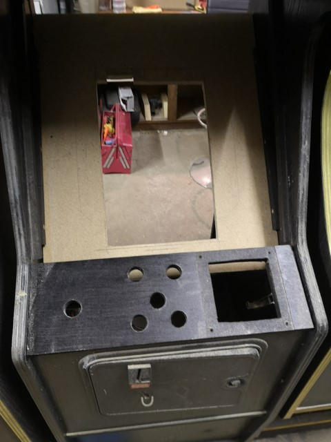 | 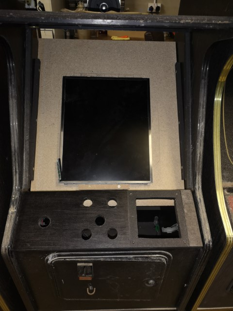 |
{kind=link}
{kind=link}
{kind=link}
{kind=link}
{kind=link}
{kind=link}
Rasberry Pi Vertical Image
For an initial setup I wanted to use Raspberry Pi as I knew it could work with the trackball I was using.
- TODO - Trackball link
- TODO - Vertical Image link
| 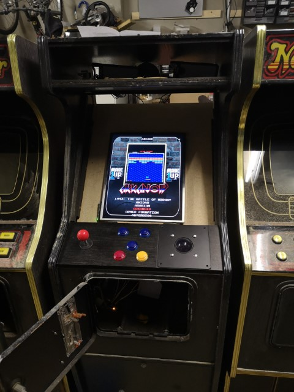 | 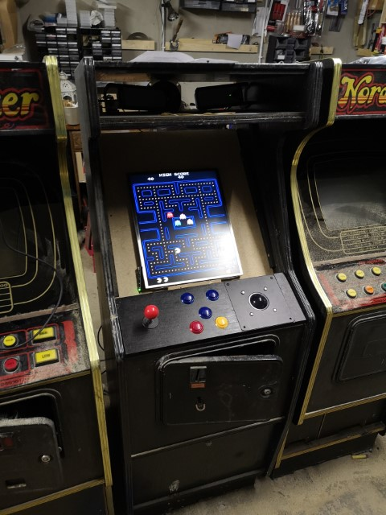 | 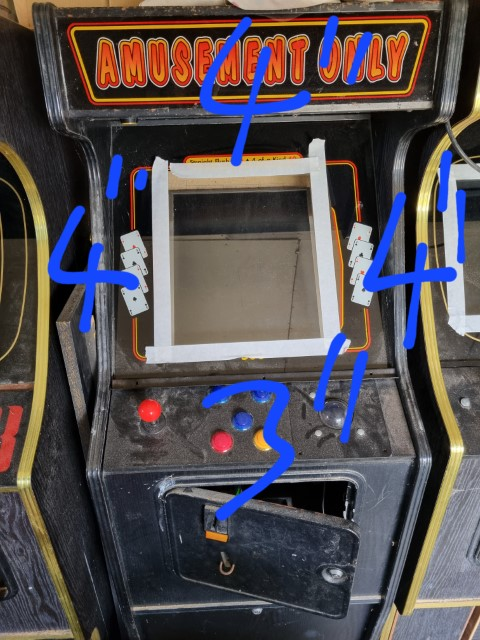 |
{kind=link}
{kind=link}
{kind=link}
Terra Cresta
One of my favorite games and the one I use to test out any mame install is terra Cresta. It was in a local shop near where my cousins lived and we played it regularly while I was younger. I'm not sure I have gotten any better at it, but when I saw a board on ebay for a reasonable amount I had to get it (alongside the Jamma adapter).
At this stage I'm still using the LCD screen, so i have connected it to a CRT->HDMI Adapter (you can see at the back of the second image).
Longer term I hope to switch this out for a Vertically mounted CRT. I've seen this done by Olly@8BitManshed for a 1943, So it might need some cab adjustments to fit it in.
I've also already received marquee and control panels from ArcadeArtShop and can't wait to get back to finish this cab.
- TODO - Update Photos
- TODO - Check Refs
| 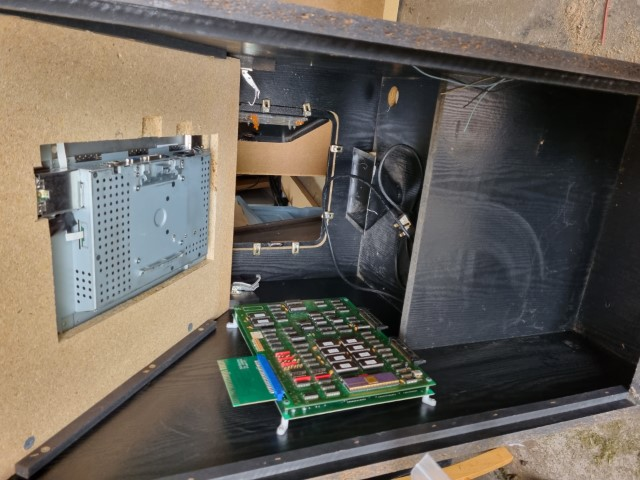 | 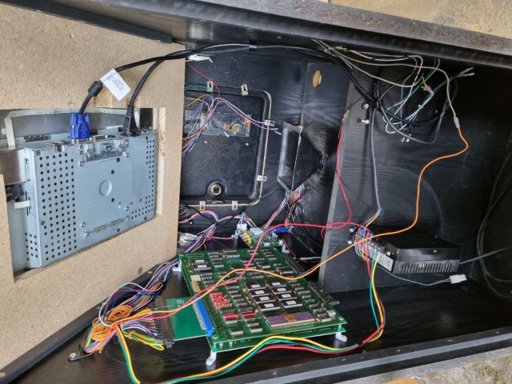 |
{kind=link}
{kind=link}